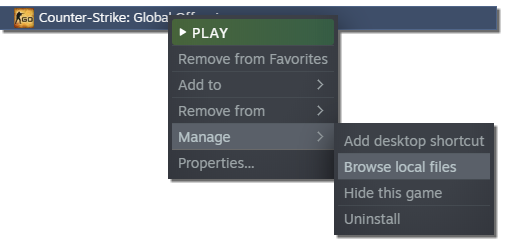

Installation
- Remove any previous version of MIGI 2 along with the MIGI folder associated
- Download MIGI 3
- Make MIGI's executable an exception to your anti-virus if flagged
- Put it inside your CS:GO installation folder next to CS:GO's executable
- Run as admin the first time to build the symbolic links
- Run MIGI again but normally
It's not working!
Check Troubleshooting
Where do I find my CS:GO installation folder?
Inside Steam:
